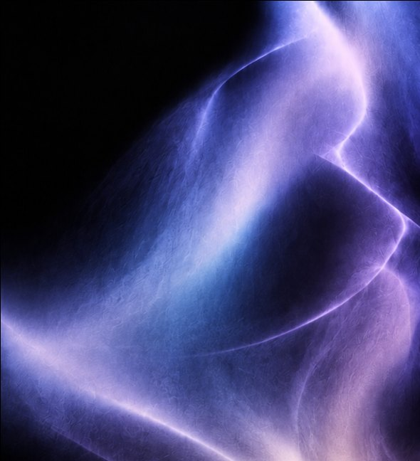
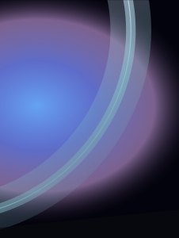
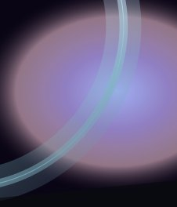
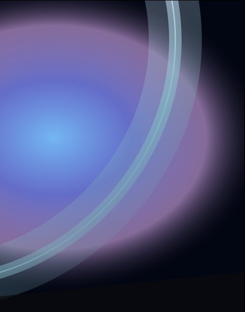
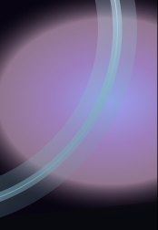
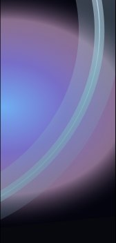

LIMEN
현실과 꿈이 맞닿는 순간, 우리는 또 다른 세계의 경계에 머무릅니다.
AN IMMERSIVE EXHIBITION
SCROLL TO EXPLORE ↓
LIMEN / 2026
내가 선택했던 순간을 다시 만나다.
수많은 흐름이 겹쳐지는 순간, 우리는 저마다의 방향을 향해 움직입니다. 그 끝에서 마주하는 선택의 흔적을 따라갑니다.
- DREAMREALITY
- VEILLUCID
- FLOWDRIFT
- INSTINCTINFLUENCE
- PERCEPTIONDIRECTION
- AWARENESSBOUNDARY
- UNCONSCIOUSCHOICE
- ECHOTRACE
- SHIFTDISSOLVE
- SUSPENDAWAKENING
- BETWEENAFTERIMAGE
- UNSEENTHRESHOLD
- MEMORYAWAKE
FLOW / AWARENESS / CHOICE
빛을 따라 움직이고, 그 흐름을 돌아보다.
SCENE PREVIEW00:00:00
01 / THE INVISIBLE INFLUENCE
보이지 않는 흐름, 선택이 되는 순간.

우리는 스스로 선택한다고 생각하지만, 그 방향에는 타인과 환경의 흐름이 함께 스며들어 있습니다.
LIMEN은 그 영향을 거부하기보다, 공간과 서로 영향을 주고받으며 선택이 형성되는 과정을 알아차리는 경험입니다.
FLOWAWARENESSCHOICE
FLOWAWARENESSCHOICE
바라보던 흐름 안으로 들어서다.
네 면을 감싸는 빛과 움직임 속에서 관객은 공간의 흐름에 반응하고, 자신의 움직임으로 그 흐름에 영향을 줍니다.
공간을 따라 움직이는 동안, 나의 선택에 스며든 영향을 마주합니다.
FROM EXPERIENCE TO SPACE
03
[ SCENES ]
Fragments of a dream.





04 / TEAM SNOOZE
MEMBER
알람의 스누즈처럼 깨어남을 잠시 미루고, 꿈에 남아 자신의 선택을 돌아보는 세계를 만듭니다.
01
DRAG · HOVER
05 / EXHIBITION SPACE
네 면이 하나의 꿈이 되는 방
01GRID · 작도
06 / HOW TO GET HERE
VISIT
- 01디자인관에서 출발건물 앞 길로 나옵니다
- 02정보관 방향으로길을 따라 동쪽으로 걷습니다
- 03정보관 도착엘리베이터를 타고
- 048층 호라이즌 스튜디오LIMEN이 시작되는 곳
- PLACE
- 계원예술대학교 정보관 8층
호라이즌 스튜디오 - BY TRANSIT
- 인덕원역 4번 출구 → 셔틀
- DATE
- 일시 · 회차 추후 공지
- ENTRY
- 회차 진행 중 추가 입장 불가
캠퍼스맵을 단순화한 그림입니다 · 축척과 입구 위치는 현장과 다를 수 있습니다